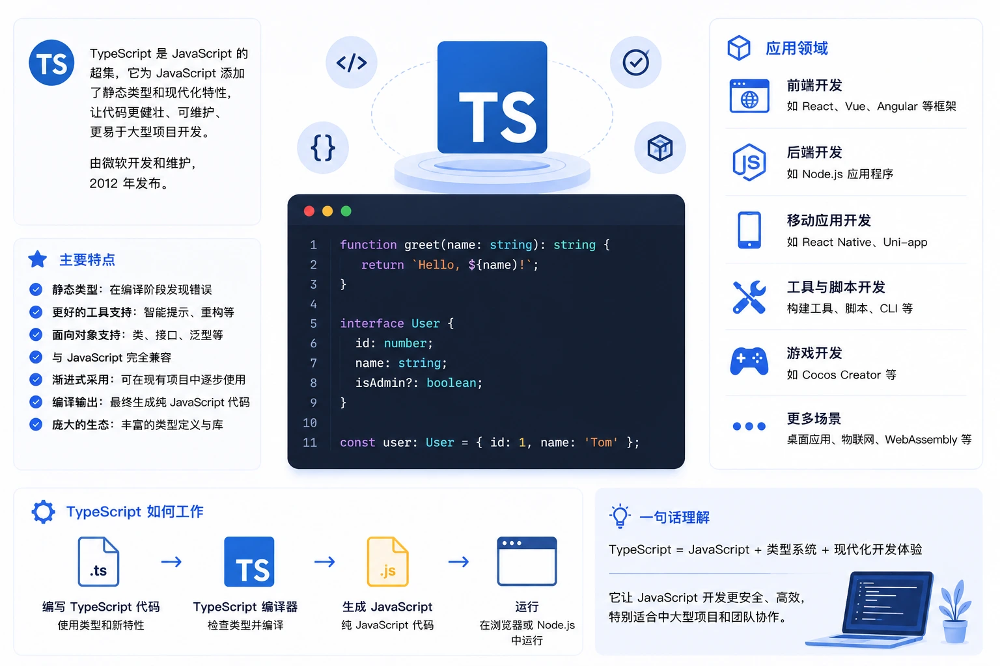

TypeScript 简介
TypeScript 是由微软开发并开源的编程语言，它是 JavaScript 的超集，在完全兼容 JavaScript 语法的基础上，增加了可选的静态类型系统和基于类的面向对象编程能力。
TypeScript 代码最终会被编译为纯 JavaScript，可以运行在任何支持 JavaScript 的环境中，包括浏览器、Node.js 和移动端。

为什么需要 TypeScript
JavaScript 是一门动态类型语言，变量的类型在运行时才能确定。
这种灵活性在小型项目中表现出色，但随着项目规模扩大，问题逐渐暴露：
| 问题场景 | JavaScript 的困境 | TypeScript 的解决方式 |
|---|---|---|
| 函数参数传错类型 | 运行时才报错，难以提前发现 | 编译阶段即报错，IDE 实时提示 |
| 访问不存在的属性 | 返回 undefined，行为难以预测 | 编译器直接报错，拒绝通过 |
| 大型项目重构 | 改一处，不知道哪里会崩 | 类型系统自动追踪所有引用 |
| 团队协作 | 函数接受什么参数、返回什么全靠注释或文档 | 类型签名即文档，IDE 自动补全 |
| 代码可读性 | 看函数定义无法直接知道数据结构 | 接口和类型别名让数据结构一目了然 |
TypeScript 的本质目标不是取代 JavaScript，而是让大规模 JavaScript 工程变得可管理、可维护。它是 JavaScript 的"安全网"，而不是竞争对手。
看一个最直观的例子：
实例
function greet(name) {
return "Hello, " + name.toUpperCase();
}
greet(123); // 运行时报错：name.toUpperCase is not a function
实例
function greet(name: string): string {
return "Hello, " + name.toUpperCase();
}
greet(123); // 编译错误：Argument of type 'number' is not assignable to parameter of type 'string'
greet("runoob"); // 正确：Hello, RUNOOB
TypeScript 与 JavaScript 的关系
TypeScript 和 JavaScript 之间的关系，可以用一句话概括：TypeScript 是 JavaScript 的超集，即所有合法的 JavaScript 代码，同时也是合法的 TypeScript 代码。
集合关系示意
JavaScript（所有 JS 代码）
⊂ TypeScript（JS + 类型系统 + 新特性）
⊂ 编译产物（标准 JavaScript，可在任意环境运行）
两者的核心差异对比：
| 对比项 | JavaScript | TypeScript |
|---|---|---|
| 类型系统 | 动态类型，运行时确定 | 静态类型，编译时检查（可选） |
| 运行方式 | 直接在浏览器 / Node.js 中运行 | 需先编译为 JS 再运行 |
| 错误发现时机 | 运行时 | 编译时（提前发现） |
| IDE 支持 | 基础补全 | 强类型推断、精准补全、重构支持 |
| 学习曲线 | 较平缓 | 需额外学习类型系统 |
| 现有 JS 兼容性 | — | 完全兼容，可渐进式迁移 |
| 文件扩展名 | .js | .ts 或 .tsx（含 JSX） |
TypeScript 支持"渐进式采用"：你不必一次性重写整个项目。可以先把
.js改为.ts，逐步为关键模块添加类型，现有代码照常运行。
核心特性
TypeScript 在 JavaScript 的基础上引入了一套完整的类型系统，以下是最常用的核心特性。
基础类型注解
在变量、函数参数、返回值后用冒号声明类型，这是 TypeScript 最基础的写法。
实例
let age: number = 25;
let username: string = "runoob";
let isActive: boolean = true;
// 数组类型，两种等价写法
let scores: number[] = [90, 85, 92];
let tags: Array<string> = ["typescript", "javascript"];
// 元组：固定长度和类型的数组
let point: [number, number] = [10, 20];
let entry: [string, number] = ["RUNOOB", 100];
// 函数：参数类型 + 返回值类型
function add(a: number, b: number): number {
return a + b;
}
// void：函数无返回值
function log(msg: string): void {
console.log(msg);
}
// 可选参数：参数名后加 ?
function greet(name: string, title?: string): string {
return title ? `${title} ${name}` : name;
}
console.log(greet("RUNOOB")); // 输出：RUNOOB
console.log(greet("runoob", "Mr.")); // 输出：Mr. runoob
接口（Interface）
接口用来描述对象的"形状"（Shape），定义对象应该具备哪些属性和方法。
实例
interface User {
id: number; // 必填
name: string; // 必填
email?: string; // 可选，使用 ? 标记
readonly role: string; // 只读，赋值后不能修改
}
// 函数参数使用接口类型
function printUser(user: User): void {
console.log(`ID: ${user.id}, Name: ${user.name}`);
if (user.email) {
console.log(`Email: ${user.email}`);
}
}
const admin: User = {
id: 1,
name: "RUNOOB",
email: "runoob@example.com",
role: "admin",
};
printUser(admin);
// 输出：ID: 1, Name: RUNOOB
// 输出：Email: runoob@example.com
// admin.role = "user"; // 错误：Cannot assign to 'role' because it is a read-only property.
// 接口继承
interface AdminUser extends User {
permissions: string[];
}
类型别名（Type Alias）
类型别名用 type 关键字创建，可以为任何类型定义别名，包括联合类型、交叉类型等复杂结构。
实例
type ID = string | number;
let userId: ID = "abc-123"; // 合法
userId = 456; // 也合法
// 字面量类型：限制变量只能取特定的值
type Direction = "up" | "down" | "left" | "right";
type Status = "pending" | "active" | "inactive";
function move(dir: Direction): void {
console.log(`Moving ${dir}`);
}
move("up"); // 正确
// move("diagonal"); // 错误：不在字面量范围内
// 交叉类型：合并多个类型
type WithTimestamp = {
createdAt: Date;
updatedAt: Date;
};
type UserRecord = User & WithTimestamp; // 同时具有 User 和 WithTimestamp 的所有属性
// 函数类型别名
type Transformer<T, U> = (input: T) => U;
const toNumber: Transformer<string, number> = (s) => parseInt(s, 10);
泛型（Generics）
泛型允许编写可复用的组件，同时保持类型安全。可以把泛型理解为"类型的变量"——使用时再传入具体类型。
实例
function firstNumber(arr: number[]): number {
return arr[0];
}
// 使用泛型：T 是类型参数，调用时确定具体类型
function first<T>(arr: T[]): T {
return arr[0];
}
const n = first<number>([1, 2, 3]); // n 的类型是 number
const s = first<string>(["a", "b"]); // s 的类型是 string
const inferred = first([true, false]); // TypeScript 自动推断 T 为 boolean
// 泛型接口
interface ApiResponse<T> {
data: T;
status: number;
message: string;
}
// 使用泛型接口
const userResponse: ApiResponse<User> = {
data: { id: 1, name: "RUNOOB", role: "admin" },
status: 200,
message: "success",
};
// 泛型约束：限制 T 必须有 id 属性
function getById<T extends { id: number }>(items: T[], id: number): T | undefined {
return items.find(item => item.id === id);
}
枚举（Enum）
枚举用于定义一组命名常量，使代码中的"魔法数字"或"魔法字符串"变得有意义。
实例
enum Direction {
Up, // 0
Down, // 1
Left, // 2
Right, // 3
}
console.log(Direction.Up); // 输出：0
console.log(Direction[0]); // 输出："Up"（反向映射）
// 字符串枚举（更推荐，调试时值更可读）
enum Color {
Red = "RED",
Green = "GREEN",
Blue = "BLUE",
}
function paint(color: Color): void {
console.log(`Painting in ${color}`);
}
paint(Color.Red); // 输出：Painting in RED
// paint("red"); // 错误：字符串 "red" 不是 Color 类型
// const 枚举：编译后会被内联，减少运行时开销
const enum HttpStatus {
OK = 200,
NotFound = 404,
InternalError = 500,
}
const status: HttpStatus = HttpStatus.OK; // 编译后直接替换为数字 200
类型推断
TypeScript 不需要为每个变量都手动标注类型，编译器会根据赋值自动推断。
实例
let count = 0; // 推断为 number
let name = "RUNOOB"; // 推断为 string
let flag = true; // 推断为 boolean
// 推断数组元素类型
let numbers = [1, 2, 3]; // 推断为 number[]
// 推断函数返回值类型
function double(n: number) { // 返回值自动推断为 number
return n * 2;
}
// 对象字面量推断
const config = {
host: "localhost", // string
port: 3000, // number
debug: false, // boolean
};
// config.port = "3000"; // 错误：Type 'string' is not assignable to type 'number'.
一个实用建议：函数的参数通常需要显式标注类型（因为调用方无法从参数值推断类型），而函数体内的局部变量和返回值大多数情况下依赖推断即可，不必全部手动标注。
类与访问修饰符
TypeScript 完整支持 ES6 的类语法，并新增了 public、private、protected、readonly 四种访问修饰符。
实例
readonly name: string; // 只读，初始化后不能修改
private age: number; // 私有，只能在类内部访问
protected species: string; // 受保护，子类可访问
constructor(name: string, age: number, species: string) {
this.name = name;
this.age = age;
this.species = species;
}
// public 方法（默认即为 public，可省略）
public introduce(): string {
return `I'm ${this.name}, a ${this.species}.`;
}
// getter：像访问属性一样调用方法
get info(): string {
return `${this.name} (${this.age} years old)`;
}
}
class Dog extends Animal {
private breed: string;
constructor(name: string, age: number, breed: string) {
super(name, age, "Canis lupus familiaris"); // 调用父类构造函数
this.breed = breed;
}
// 子类可以访问 protected 属性
describe(): string {
return `${this.name} is a ${this.species}, breed: ${this.breed}`;
}
}
const dog = new Dog("RUNOOB", 3, "Labrador");
console.log(dog.introduce()); // 输出：I'm RUNOOB, a Canis lupus familiaris.
console.log(dog.info); // 输出：RUNOOB (3 years old)
// console.log(dog.age); // 错误：私有属性无法从外部访问
装饰器（Decorator）
装饰器是一种元编程语法，用于在类、方法、属性上附加额外行为，常见于 Angular、NestJS 等框架。
TypeScript 5.0 已将装饰器实现为正式标准（Stage 3 提案），不再需要开启 experimentalDecorators 标志。
实例
function sealed(constructor: Function) {
Object.seal(constructor); // 禁止添加新属性
Object.seal(constructor.prototype);
}
// 方法装饰器：可用于日志记录、权限校验等
function log(target: any, propertyKey: string, descriptor: PropertyDescriptor) {
const original = descriptor.value;
descriptor.value = function (...args: any[]) {
console.log(`Calling ${propertyKey} with args:`, args);
const result = original.apply(this, args);
console.log(`${propertyKey} returned:`, result);
return result;
};
}
@sealed
class Calculator {
@log
add(a: number, b: number): number {
return a + b;
}
}
const calc = new Calculator();
calc.add(1, 2);
// 输出：Calling add with args: [ 1, 2 ]
// 输出：add returned: 3
应用领域
TypeScript 凭借其对 JavaScript 的完全兼容性，几乎可以用在所有 JavaScript 能运行的地方，并且在大型项目中带来额外收益。
前端 Web 开发
这是 TypeScript 使用最广泛的场景。三大主流前端框架均对 TypeScript 提供一级支持：
| 框架 | TypeScript 支持情况 | 典型场景 |
|---|---|---|
| Angular | 官方语言，默认使用 TypeScript，无法绕过 | 企业级 SPA、后台管理系统 |
| React | 官方提供 @types/react，Create React App 和 Vite 均内置 TypeScript 模板 | 电商、内容平台、中后台应用 |
| Vue | Vue 3 核心代码用 TypeScript 重写，组合式 API 对 TypeScript 友好度显著提升 | 中小型项目、渐进式迁移 |
| Next.js / Nuxt | 内置 TypeScript 支持，新项目默认开启 | 全栈 SSR/SSG 应用 |
后端 Node.js 开发
TypeScript 在 Node.js 后端开发中同样普及。NestJS 是目前最流行的 TypeScript 后端框架，采用与 Angular 相近的模块化架构，内置依赖注入和装饰器支持。
此外，Deno 运行时从第一天起就原生支持 TypeScript，无需任何配置即可直接运行 .ts 文件。Bun 同样内置 TypeScript 支持。
命令行工具与脚本
借助 ts-node、tsx 等工具，TypeScript 代码可以在不预编译的情况下直接执行，非常适合编写构建脚本和 CLI 工具。
移动端与跨平台
React Native 完整支持 TypeScript，大量企业级移动应用（如 Microsoft Office 移动版、Shopify 等）均采用此技术栈。Expo 的新项目模板默认也以 TypeScript 为基础。
游戏开发与图形
Babylon.js（微软出品的 3D 引擎）完全用 TypeScript 编写，并将 TypeScript 类型定义作为一等公民。Phaser 等 2D 游戏引擎同样提供完整的类型定义。
发展历史
TypeScript 的诞生和成长历程与 JavaScript 生态的演变密切相关，每一次重大版本发布背后都有清晰的工程需求驱动。
起源（2010 - 2012）
TypeScript 的故事始于微软内部的一个工程挑战：如何让大型 JavaScript 项目变得可维护。
设计者 Anders Hejlsberg 是业界传奇——C# 的首席架构师，也是 Turbo Pascal 和 Delphi 的创造者。他在 2010 年左右开始设计这门语言，核心目标是在不破坏 JavaScript 兼容性的前提下，引入静态类型检查。
微软推出 TypeScript 的另一个背景是 Windows 8 的发布——应用程序可以使用 HTML + JavaScript 开发，微软希望吸引 .NET 程序员参与，因此 TypeScript 的许多语法有意与 C# 和 .NET 保持相近。
2012 年 10 月，TypeScript 0.8 公开发布，此前已在微软内部开发了约两年。
早期版本（2013 - 2015）
| 时间 | 版本 | 重要事件 |
|---|---|---|
| 2013-06 | 0.9 | 正式稳定版发布，性能大幅提升，IDE 整合更完善 |
| 2014-04 | 1.0 | 第一个正式稳定版，引入类、接口、模块，支持编译为标准 JavaScript |
| 2014-07 | — | TypeScript 编译器代码开源，托管于 GitHub，接受社区贡献 |
| 2015-04 | — | 微软发布 Visual Studio Code，内置对 TypeScript 的深度支持，两者相互成就 |
| 2015-07 | 1.5 | 引入 ES6 模块语法支持、装饰器（实验性）、命名空间 |
高速成长（2016 - 2019）
这一阶段是 TypeScript 从小众工具走向主流的关键时期，核心推动力来自框架生态的选择。
| 时间 | 版本 / 事件 | 里程碑意义 |
|---|---|---|
| 2016-09 | TypeScript 2.0 | 引入非空类型（--strictNullChecks），这是 TypeScript 类型安全最重要的特性之一；引入标记联合类型 |
| 2016 | Angular 2 发布 | Google Angular 团队宣布采用 TypeScript 作为官方开发语言，将 TypeScript 带入大众视野 |
| 2017 | TypeScript 2.x 系列 | 条件类型、映射类型、infer 关键字相继推出，类型系统表达能力大幅提升 |
| 2018-07 | TypeScript 3.0 | 项目引用（Project References），支持大型 monorepo；引入 unknown 类型（比 any 更安全的顶级类型） |
| 2019 | DefinitelyTyped | 社区维护的类型定义仓库 DefinitelyTyped（@types/*）超过 7000 个包，基本覆盖所有主流 npm 库 |
成熟与普及（2020 - 2022）
| 时间 | 版本 / 事件 | 重要内容 |
|---|---|---|
| 2020-08 | TypeScript 4.0 | 可变元组类型、标记元组元素；编辑器体验大幅改善 |
| 2021 | TypeScript 4.x 系列 | 模板字符串类型（Template Literal Types）、内置工具类型增强、noImplicitOverride 等严格模式增强 |
| 2022 | State of JS 调查 | TypeScript 使用率首次超越纯 JavaScript，成为 JS 生态中最受欢迎的超集语言 |
| 2022 | Vue 3 / Vite 普及 | Vue 3 核心用 TypeScript 重写，配合 Vite 让前端工程的 TypeScript 体验达到新高度 |
现代阶段（2023 至今）
| 时间 | 版本 | 重要特性 |
|---|---|---|
| 2023-03 | TypeScript 5.0 | 现代化装饰器（Stage 3 标准）、const 类型参数、所有枚举升级为联合枚举，性能显著提升 |
| 2023-08 | TypeScript 5.2 | 引入 Explicit Resource Management（using 关键字），解决数据库连接、文件句柄等资源的确定性清理问题 |
| 2024-03 | TypeScript 5.4 | 闭包中类型收窄改进，NoInfer 工具类型 |
| 2024-06 | TypeScript 5.5 | 类型谓词推断，正则表达式语法检查，让类型系统对代码逻辑理解更精准 |
| 2024-11 | TypeScript 5.7 | 支持 --target es2024，未初始化变量检测更可靠 |
| 2025-03 | TypeScript 5.8 | 条件和索引访问类型的返回值检查增强；支持在 --module nodenext 下通过 require() 加载 ESM 模块（需 Node.js 22+） |
未来展望：用 Go 重写编译器
2025 年初，微软宣布了一项重大决定：以 Go 语言重写 TypeScript 编译器，项目代号 Corsa。
官方表示，重写后的编译器性能提升预计超过 10 倍，大型项目的构建时间将从分钟级降至秒级。
按照规划，Go 版本将在 TypeScript 7.x 正式发布，目前 5.x / 6.x 的 TypeScript 版本继续正常迭代和维护。预计 2025 年末完成重构工作。
这次重写并不会改变 TypeScript 语言本身的语法或类型系统，对开发者而言是透明的升级——你的代码不需要任何改动，只是编译速度大幅提升。
TypeScript 与其他强类型语言的对比
如果你有其他强类型语言的背景，以下对比可以帮助你快速定位 TypeScript 的设计理念。
| 对比项 | TypeScript | Java / C# | Go |
|---|---|---|---|
| 类型系统 | 结构化类型（鸭子类型） | 名义类型（必须显式声明继承关系） | 结构化类型（隐式接口） |
| 空值安全 | 开启 strictNullChecks 后支持 | Java 需借助注解或 Optional，C# 8+ 支持 | 通过 error 值和 nil 检查 |
| 泛型 | 支持，语法与 Java/C# 相近 | 支持，Java 有类型擦除限制 | Go 1.18+ 支持，语法较简洁 |
| 编译产物 | JavaScript（在 JS 环境运行） | 字节码（在 JVM / CLR 上运行） | 原生机器码 |
| 运行时类型检查 | 无（类型信息编译后抹除） | 有（反射机制） | 无 |
| 学习曲线 | 对 JS 开发者友好，可渐进采用 | 对初学者较陡 | 相对简洁，学习曲线中等 |
TypeScript 使用的是结构化类型系统（Structural Typing）：只要两个类型的"形状"一致，就认为它们是兼容的，不要求显式声明继承关系。这与 Java/C# 的名义类型（Nominal Typing）有本质区别，也是 TypeScript 能与 JavaScript 无缝互操作的关键原因。
TypeScript 的局限性
TypeScript 不是银弹，了解它的边界同样重要。
| 局限 | 说明 | 应对思路 |
|---|---|---|
| 运行时无类型 | 类型信息在编译后全部抹除，运行时无法依赖类型做判断 | 需要运行时校验时使用 zod、io-ts 等库 |
| 编译步骤 | 相比纯 JS 多了一个编译环节，增加了工程复杂度 | 现代构建工具（Vite、esbuild）对此已有良好优化 |
| any 类型逃生舱 | 滥用 any 会让类型检查形同虚设 | 开启 noImplicitAny 和 strict 模式，配合 ESLint 规则 |
| 类型体操门槛 | 复杂的条件类型和映射类型对初学者不友好 | 大多数业务代码不需要高级类型，循序渐进即可 |
| 第三方库支持 | 少数老旧库缺少类型定义，需要自行编写 .d.ts | 先查 @types/*，确实没有再手写声明文件 |

点我分享笔记